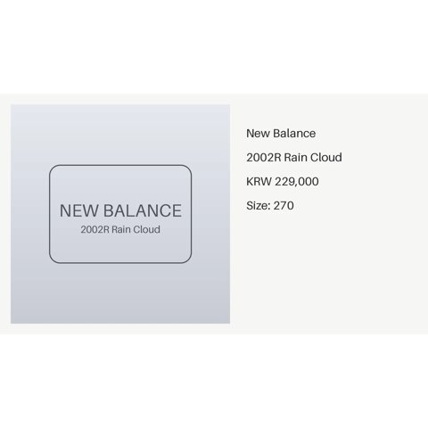
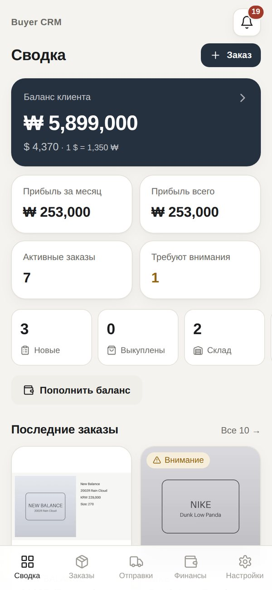
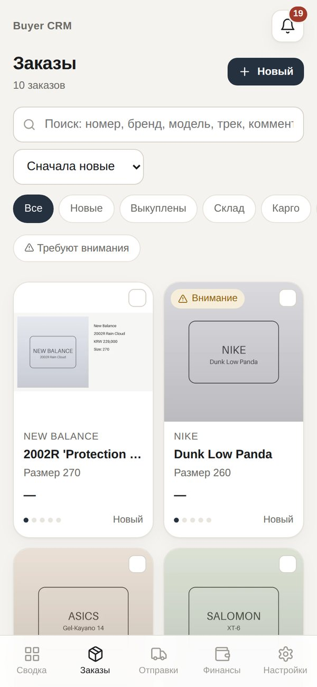
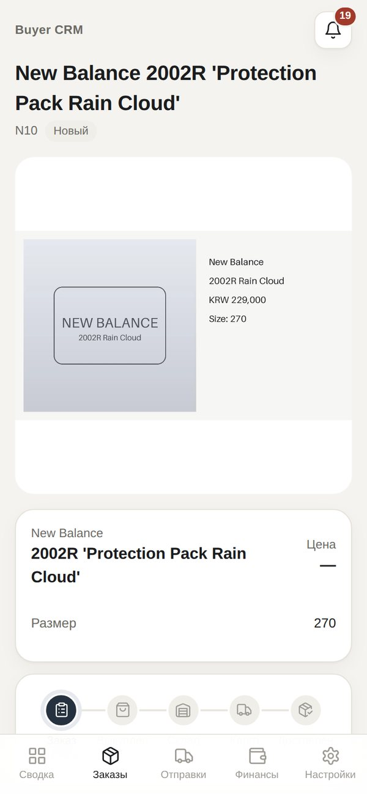
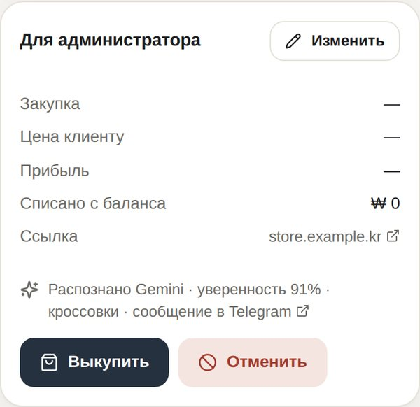
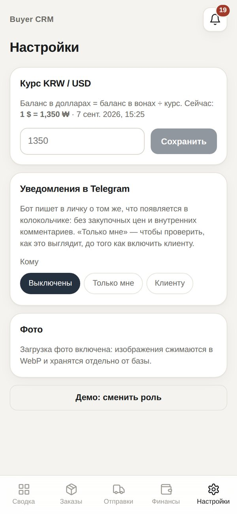
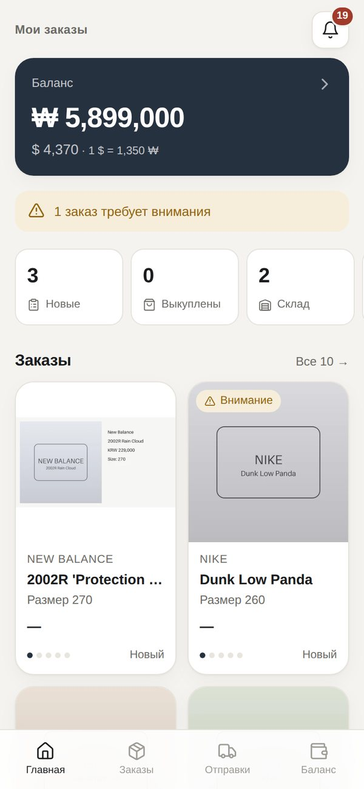
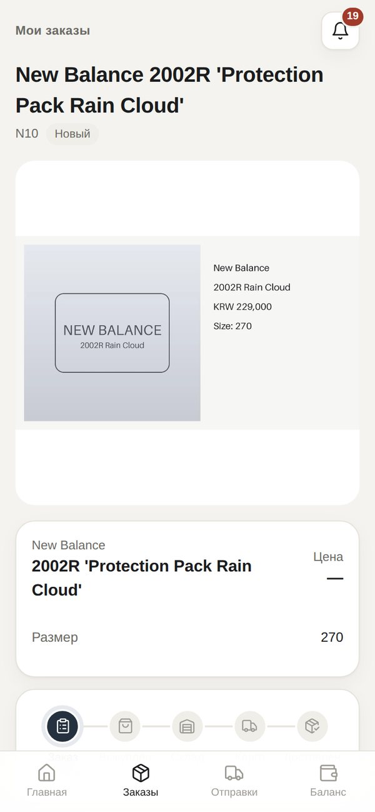
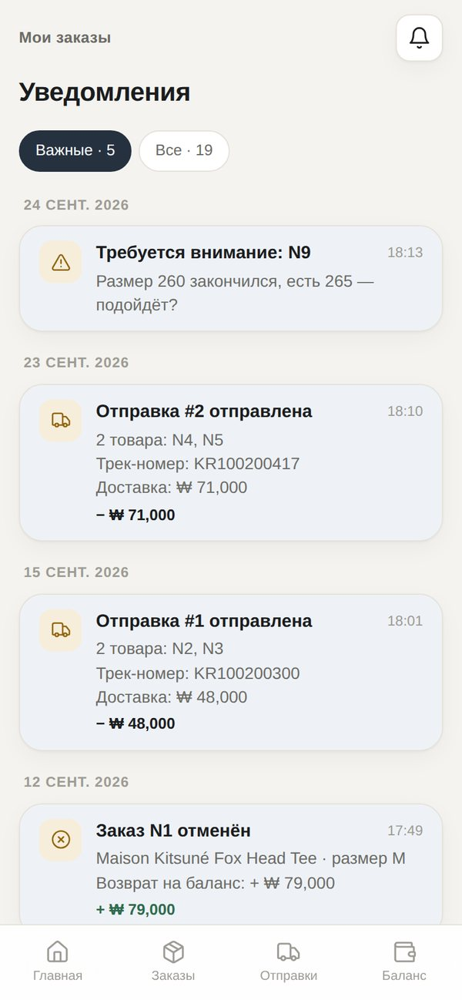
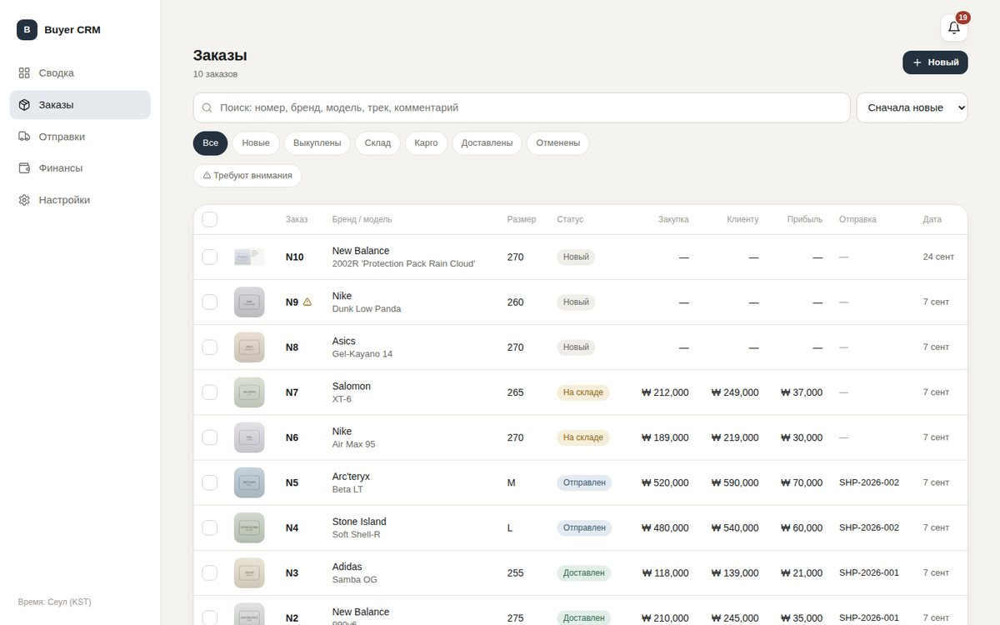

Как за один вечер запустить CRM: Telegram-бот, распознавание заказов по фото через Gemini и Mini App для вас и клиента. Сначала всё проверяется на вашем компьютере, потом при желании переносится на постоянный сервер.
Дальше как обычно: /buy списывает цену с баланса один раз, статусы, отправки,
колокольчик и уведомления в личку. Деньги никогда не двигаются от Gemini — только от ваших команд.
david270799/buyer-crm на GitHub..env на вашем компьютере или сервере.
Никому их не пересылайте, в том числе в чат с ИИ. Если токен бота когда-то попал в переписку —
перевыпустите его (шаг 2).Откройте @BotFather → /mybots → ваш бот → API Token.
Скопируйте токен — он понадобится в .env как BOT_TOKEN.
Если токен уже где-то светился, там же нажмите Revoke current token и возьмите новый.
Отправьте /setprivacy, выберите бота, нажмите Disable.
Без этого Telegram не показывает боту обычные фото в группе, и заказы не будут приниматься.
Если бот уже был в группе — после этого удалите его из группы и добавьте снова: настройка применяется при входе в группу.
Отдельно ничего настраивать не нужно: CRM хранит всё на том компьютере или сервере, где работает,
в одной папке data/ в проекте. Firebase, Google Cloud и платные тарифы не нужны.
| Что | Где |
|---|---|
| База: заказы, деньги, история | data/crm.sqlite3 — один файл (SQLite) |
| Фото заказов и отправок | data/media/ — квадратные WebP до ~0,5 МБ |
| Резервные копии базы | data/backups/ — последние 14 |
В 4:00 по Сеулу бот сохраняет копию базы и присылает её файлом вам в личку. Так копия есть не только на сервере: если сервер сломается, из этого файла восстанавливаются все заказы, деньги и история. Фото в копию не входят. Сохраняйте эти файлы и никому их не пересылайте — в них все данные.
python -m crm.tools.backup # сделать копию сейчас python -m crm.tools.backup --list # список копий python -m crm.tools.backup --restore ФАЙЛ.gz # восстановить (сервер остановлен)
Перед заменой копия проверяется, прежняя база остаётся рядом. Пока сервер запущен, восстановление не выполнится — сначала остановите его (Ctrl+C).
Откройте aistudio.google.com/apikey своим Google-аккаунтом →
Create API key → выберите или создайте проект (любой, например «buyer-crm») → скопируйте ключ.
Это GEMINI_API_KEY. Новые ключи начинаются с AQ., старые — с AIza; подходят оба.
Модель по умолчанию — gemini-2.5-flash: быстрая и недорогая, на бесплатном лимите
хватает на десятки–сотни фото в день. Другую модель можно указать в GEMINI_MODEL.
На бесплатном тарифе Google может использовать запросы для улучшения своих продуктов; на платном — нет.
Вся новая работа сейчас в ветке claude/optimistic-wozniak-przqge.
git clone https://github.com/david270799/buyer-crm.git cd buyer-crm git checkout claude/optimistic-wozniak-przqge
Без Git: на GitHub переключите ветку на claude/optimistic-wozniak-przqge → Code → Download ZIP и распакуйте.
cd web npm install npm run build cd ..\backend python -m venv .venv .venv\Scripts\activate pip install -r requirements.txt
python не найден — пишите py. Если PowerShell пишет, что выполнение
сценариев отключено: один раз Set-ExecutionPolicy -Scope CurrentUser RemoteSigned или используйте «Командную строку».cd web npm install npm run build cd ../backend python3 -m venv .venv source .venv/bin/activate pip install -r requirements.txt
.envВ корне проекта (папка buyer-crm) скопируйте .env.example в .env и откройте в блокноте:
Windows — copy .env.example .env и notepad .env; macOS — cp .env.example .env и open -e .env.
Заполните:
# шаг 2 BOT_TOKEN=123456789:AA... # пока пусто — узнаем на шаге 6 ADMIN_TELEGRAM_IDS= # пока пусто — шаг 7 MINI_APP_URL= # шаг 4 GEMINI_API_KEY=AQ.Ab8... # уже стоит: данные в папке data/ (шаг 3) STORAGE=sqlite
Значение пишите сразу после =, без кавычек и без комментариев в той же строке.
Остальные строки можно не трогать.
backend (с активированным
.venv) выполните python -m crm.server --demo и откройте http://localhost:8080 —
это демо с примерами заказов в памяти, ключи не нужны, настоящая база не затрагивается.В папке backend с активированным .venv:
python -m crm.tools.doctor
Она ничего не меняет, только проверяет: папку данных, свободное место, копии, ключ Gemini, данные в базе.
До первого запуска она напишет «базы ещё нет — создастся при первом запуске» — это нормально. Нормально и ❌ про
ADMIN_TELEGRAM_IDS и client_info/main_client — их настроим дальше.
python -m crm.server
В окне появятся SQLite database: …/data/crm.sqlite3, Bot @… started и
Uvicorn running on http://0.0.0.0:8080.
Окно не закрывайте: пока оно открыто, бот работает. Остановка — Ctrl+C.
В новом окне терминала сначала снова перейдите в buyer-crm/backend и активируйте
.venv (команда activate из шага 5) — в начале строки появится (.venv).
Напишите своему боту /start — он ответит «Это закрытая CRM-система. Ваш Telegram ID: …».
Впишите число в .env: ADMIN_TELEGRAM_IDS=123456789, остановите сервер (Ctrl+C) и запустите снова.
Теперь /start покажет список команд администратора.
Telegram открывает Mini App только по адресу https://. Для проверки дома не нужен сервер — хватит бесплатного туннеля Cloudflare: он даёт временный https-адрес к вашему компьютеру.
Установите: Windows — winget install --id Cloudflare.cloudflared; macOS — brew install cloudflared.
В отдельном окне (сервер из шага 6 продолжает работать):
cloudflared tunnel --url http://localhost:8080
Скопируйте адрес вида https://calm-river-1234.trycloudflare.com из вывода.
Впишите его в .env: MINI_APP_URL=https://calm-river-1234.trycloudflare.com/ и перезапустите сервер.
Бот сам поставит кнопку «CRM» рядом с полем ввода в личке. Нажмите её — откроется панель администратора.
cloudflared: тогда обновите
MINI_APP_URL и перезапустите сервер. Для постоянной работы — сервер с доменом (раздел 11).В группе бот ничего не пишет: заказы принимает молча — от клиента и от его помощников. Всё, что требует вашего внимания, приходит вам в личку.
Для проверки создайте тестовую группу: вы + второй аккаунт («клиент»), при желании третий («помощник»). Если вы админ группы, сначала выключите у себя «Анонимность» (Remain anonymous): иначе Telegram не показывает, что бота добавили вы, и бот выйдет (и напишет вам почему). Добавьте бота — в личку придёт ID группы и предупреждение, если Privacy Mode ещё включён. Если бота добавит кто-то другой, он сразу выйдет из группы.
Чтобы бот мог удалять из группы ваши служебные команды (/setclient, /add),
сделайте его администратором группы с правом «Удаление сообщений». Не обязательно.
/setclientВ группе ответьте (Reply) командой /setclient на любое сообщение самого клиента (не помощника).
Ответ придёт вам в личку. Только этот аккаунт сможет открывать CRM и видеть баланс; помощники могут
присылать заказы, но доступа к CRM не получат. Баланс существующего клиента команда не меняет.
Чтобы бот работал только в этой группе, впишите присланный ID (число с минусом) в .env:
ALLOWED_CHAT_IDS=-1001234567890 и перезапустите сервер.

270 https://store.example.kr/nb-2002rЗаказ N1 (клиент, размер и ссылка есть) принят молча — вопросов нет. Заказ N2 принят тоже, но без размера — бот спросил вас. Широкий скриншот стал квадратом с белыми полями; ссылку из подписи видите только вы.
Отмечайте по порядку. Всё, что делает «клиент», — со второго аккаунта.
| Действие | Что должно произойти |
|---|---|
| Клиент: фото + «42» | В группе тишина, заказ появился в CRM с моделью и размером. Номера: N1, N2, … |
| Клиент: фото без подписи | Заказ создан; вам в личку фото и вопрос «размер не указан». |
| Помощник (третий аккаунт): фото | Заказ создан. Если помощник нажмёт у бота «CRM» или напишет /balance — доступа нет. |
| Клиент: фото чека или коробки | Заказа нет, вам в личку: «не похоже на заказ». Ответ /add на это фото в группе — заказ создаётся. |
| Вы: кнопка «CRM» | Заказ с квадратным фото; в блоке «Для администратора» — «Распознано Gemini · уверенность …%». |
Вы в личке: /deposit 1000000 тест | Баланс клиента ₩1,000,000 (у клиента в CRM тоже). |
/buy 1 100000 120000 | Заказ N1 «Выкуплен», баланс −120 000. Повтор той же команды не списывает второй раз. |
/notify me all | Дальше каждое событие приходит вам в личку с кнопкой «Открыть в CRM». |
/status warehouse 1, /cargo TRACK1 1 | Статусы меняются, клиент видит их в CRM и в колокольчике. |
| Клиент: кнопка «CRM» | Только его режим: заказы, фото, статусы, баланс. Нет закупок, прибыли, ссылок, внутренних комментариев. |
/notify client | Уведомления уходят клиенту. Он должен один раз открыть бота в личке и нажать Start. |
data, например в data-test. При следующем
запуске CRM начнёт с чистой базы: номера снова с N1, баланс ₩0. Затем заново /setclient на сообщение
настоящего клиента.Экраны из демо-режима (python -m crm.server --demo) — у вас будет то же самое с вашими данными.









Когда всё проверено, CRM переносится на сервер, чтобы работать круглосуточно без вашего компьютера.
Подробно — в docs/deploy.md в проекте; коротко:
VPS (1 vCPU, 1–2 ГБ RAM, Ubuntu, ваши 30 ГБ диска) и домен или поддомен, например crm.вашдомен.com.
В DNS домена — A-запись на IP сервера.
На сервере установите Docker: curl -fsSL https://get.docker.com | sh, скачайте проект (как в шаге 5).
Скопируйте свой .env и поправьте две строки: DOMAIN=crm.вашдомен.com,
MINI_APP_URL=https://crm.вашдомен.com/.
chmod 600 .env docker compose up -d --build docker compose logs -f crm docker compose exec crm python -m crm.tools.doctor
HTTPS-сертификат для домена получится автоматически (Caddy). База, фото и копии хранятся в томе Docker
crm_data и не пропадают при обновлениях. Скачать копии с сервера:
docker compose cp crm:/data/backups ./backups. Тестовую базу с компьютера переносить не нужно —
на сервере начните с чистой.
Обновление после изменений в проекте: git pull && docker compose up -d --build.
| Команда | Что делает |
|---|---|
| фото + подпись | Новый заказ: от клиента или помощников в группе — молча; от вас в личке с ботом (можно пересылать) — с ответом. |
| /add (ответом на фото) | Принять фото как заказ, если бот решил, что это не заказ. |
| /setclient (ответом) | Указать, кто клиент (сам клиент, не помощник). Или /setclient 123456789 Имя. Ответ — в личку. |
| /buy 5 140000 170000 | Выкуп: закупка, цена клиенту; списывает цену один раз. |
| /rebuy 5 150000 185000 [ссылка] [причина] | Перезаказ: с баланса только разница; причину увидит клиент, ссылку — только вы. |
| /cancel 5 | Отмена с возвратом (до отправки). |
| /status warehouse 5 7 | Статус нескольких заказов (warehouse, cargo, delivered). |
| /cargo TRACK123 5 7 | Отправка с трек-номером; /shipcost 1 95000 — стоимость доставки (списывается). |
| python -m crm.tools.backup | Копия базы сейчас; --list — список; --restore ФАЙЛ — восстановление. |
| /deposit, /adjust, /rate | Пополнение, корректировка с причиной, курс KRW за 1 USD. |
| /notify me all · /notify client | Уведомления в личку: вам для проверки или клиенту; важные или все. |
| /order 5, /balance, /history | Карточка заказа, баланс, история. |
| /whoami, /help | Ваш ID и список команд. |
| Признак | Что сделать |
|---|---|
| Фото из группы не стало заказом | В группу бот не пишет — смотрите заказ в CRM. Если его нет: Privacy Mode
(/setprivacy → Disable, затем удалить и снова добавить бота); ваши собственные фото в группе заказами не считаются;
фото, отправленное ответом на другое сообщение, — тоже. Ошибки и «не похоже на заказ» приходят вам в личку. |
| Модель не распознаётся | python -m crm.tools.doctor — строка «Gemini». В заказе в CRM написана причина («ключ не подходит», «лимит»). |
| Нет кнопки «CRM» | MINI_APP_URL должен начинаться с https://; после изменения — перезапуск. Обновите чат с ботом. |
| «Откройте CRM из Telegram» | Адрес открыт в браузере — CRM входит только через кнопку в Telegram (или демо-режим). |
| «Нет доступа» | Ваш ID не в ADMIN_TELEGRAM_IDS или клиент не указан — /setclient. |
| Уведомления не приходят | Получатель должен нажать Start в личке с ботом. Причина ошибки видна в CRM → Настройки. |
| «База уже открыта другим процессом» | CRM уже запущена в другом окне или на сервере — остановите лишнюю. |
| Не пришла ночная копия | Бот должен работать в 4:00 (Сеул), а вы — один раз нажать Start в личке с ботом. Копии также лежат в data/backups. |
| No module named … | Не активирован .venv или команда запущена не из папки backend. |
| Conflict: terminated by other getUpdates | Бот запущен в двух местах одновременно — остановите лишний. |
.env; в Git он не попадает, как и папка data/. Никому не отправляйте.